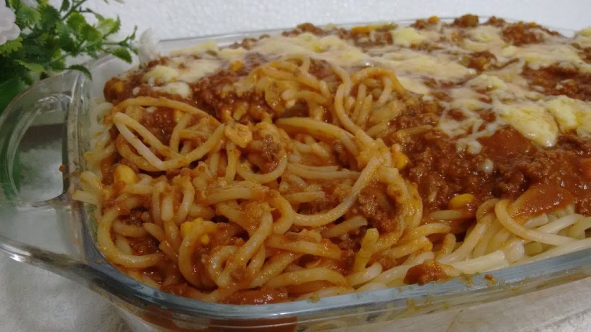

Moqueca de Camarão
Itens Utilizados:
- 1/2 kg de camarão médio
- 1/2 xícara de café de azeite de dendê
- 1/2 xícara de chá de coentro
- 2 cebolinhas verdes cortadas
- Sal a gosto
- Suco de limão
- 2 cebolas médias cortadas em rodelas
- 1/2 xícara de chá de salsinha picada
- 3 tomates cortados em rodelas
- 1 vidro de leite de coco
Modo de Preparo:
1.Limpar os camarões e temperar com sal e o suco de limão.
2.Reserve.
3.Refogue todos os temperos por 15 minutos no azeite-de-dendê.
4.Acrescente os camarões e cozinhe por 5 minutos com a panela tampada.
5.Por último, acrescente o leite de coco.
6.Sirva com arroz branco.
Macarronada de Carne Moída
Itens Utilizados:
- 1 pacote de macarrão para macarronada.
- 1/2 kg de carne moída.
- 2 creme de leite.
- 100 g de presento.
- 1 caixa de extrato de tomate (grande).
- Cebolinha, pimentaõ, cheiro verde, alho, tomate (para temperar carne) knnor.
- 200 g de queijo mussarela.
Modo de Preparo:
1,Cozinhe a carne moída temperada com sal, cebolinha, pimentão, cheiro verde, tomate, knnor (ou ao seu gosto) deixe a carne com pouca água.
2.Após cozida junte o extrato de tomate até levantar fervura, a consistência deve estar bem grossa, apague o fogo e acrescente o creme de leite (reserve).
3.Corte o queijo e o presunto em tirinhas.
4.Para montagem: Em uma travessa (retangular), espalhe parte do macarrão.
5.Em seguida acrescente parte da carne.
6.Depois coloque o restante do macarrão e em seguida o restante do molho.
7.Espalhe o queijo e o presunto em cima depois leve ao forno por 10 minutos apenas para derreter um pouco o queijo.
8.Cubra com papel alumínio para não ressecar o macarrão.
9.Depois retire e sirva para melhorar pode servir com catchup.
Bicho de Pé
Itens Utilizados:
- 1 lata de leite condensado
- 1 caixinha de gelatina de morango (pode ser sabor uva, framboesa, amora)
- 1 colher de sopa de margarina sem sal
- Açúcar para enrolar
Modo de Preparo:
1.Açúcar para enrolar
2.Mexa sempre até ferver, em fogo baixo.
3.Assim que começar a ferver, acrescente o pó da gelatina (não precisa dissolver antes).
4.Mexa bem, em fogo baixo, até desprender do fundo da panela.
5.Espere esfriar para enrolar em forma de bolinhas.
6.Peneire o açúcar e passe as bolinhas no açúcar peneirado.